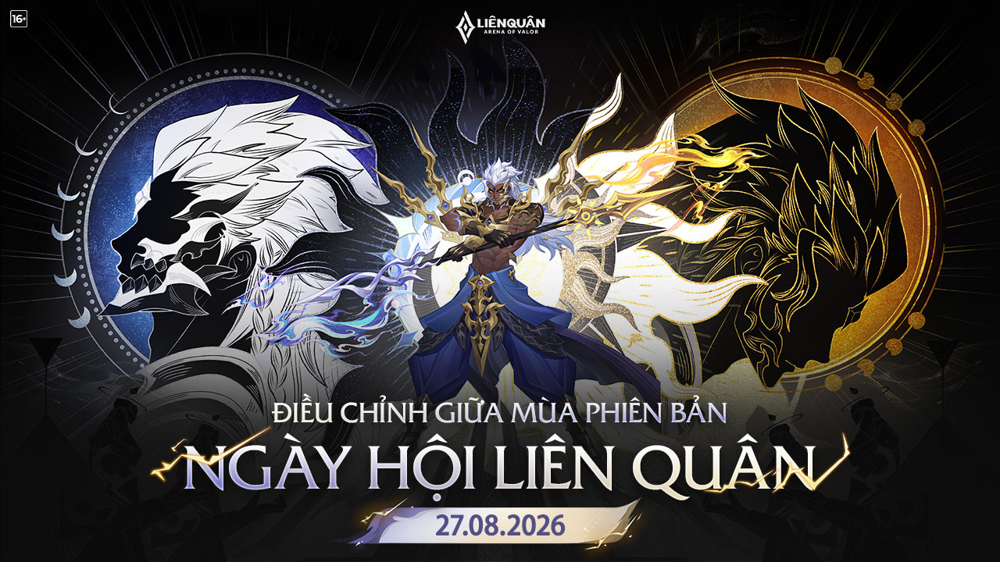

ĐIỀU CHỈNH NỘI DUNG - NGÀY HỘI LIÊN QUÂN
Xin chào các Kiện Tướng,
Liên Quân Mobile sẽ tiến hành cập nhật không gián đoạn cho máy chủ chính thức vào ngày 27/08/2026. Trong thời gian quy định, các Kiện tướng có thể tự chọn thời điểm cập nhật thuận tiện (Không cập nhật ngay vẫn có thể chơi game bình thường, chỉ một số tính năng sẽ bị hạn chế). Thời gian cập nhật linh hoạt tùy theo khu vực.
Cơ chế mùa Bệ phóng hỏa tiễn được mở lại từ ngày 27/08 đến hết mùa S3/2026.

SỰ KIỆN
Trang phục giới hạn khu vực đổ bộ! Nông trại Truyền Thuyết khai trương, nhận miễn phí lượng lớn trang phục!
Thời gian sự kiện: 28/8 – 20/9
Lối vào sự kiện: Trung tâm sự kiện -> Hành Trình Tò He
Thưởng sự kiện: Thu thập vật phẩm chỉ định để hoàn thành mảnh ghép, có thể nhận trang phục Việt Nam Wisp Te Tò He, emote, hoạt họa và khung viền!
Ngân hàng quà tặng
Thời gian sự kiện: 31/8 – 13/9
Lối vào sự kiện: Trung tâm sự kiện -> Ngân Hàng Quà Tặng
Thưởng sự kiện:
- Đăng nhập trong tuần để tăng thưởng gacha; cuối tuần có thể chơi trận để rút thưởng
- Thu thập xu đổi gacha để đổi Rương tự chọn trang phục giới hạn cùng hiệu ứng và emote
- Trang phục trong rương gồm: Kahlii Kim cô giáo chủ, Omen Ám tử đao, Dirak Ông bầu Showbiz, Thorne Giả kim thuật sư, Zephys Hắc vô thường.
Nông Trại Liên Quân khai trương!
Nông trại liên Quân sắp khai trương. Hoàn thành các nhiệm vụ trong nông trại là có thể nhận miễn phí trang phục giới hạn! Hãy cùng đón chờ!
Thời gian sự kiện: 4/9 – 20/10
Lối vào sự kiện: Trung tâm sự kiện -> Nông Trại Liên Quân
Thưởng sự kiện:
- Thu thập đủ số lượng cây trong bộ sưu tập để nhận trang phục Ngộ Không Đại náo văn phòng và danh hiệu Siêu phàm (180D).
- Xu Nông Trại nhận được khi bán cây có thể dùng để đổi giới hạn thời gian trang phục Ryoma Bá Tước Rừng Đen, trang phục hợp tác Conan và lượng lớn tài nguyên!
CÂN BẰNG TƯỚNG
D’Arcy
“Chúng tôi quan sát thấy rằng trước đây D’Arcy quá phụ thuộc vào chiêu cuối trúng đích khiến trải nghiệm trở nên cực đoan. Vì vậy trong lần điều chỉnh này, chúng tôi đã tăng cường sự liên kết và khả năng sinh tồn của chiêu 1 và chiêu 2 để giúp D’Arcy có thể đối kháng một cách hiệu quả ngay cả khi không có chiêu cuối.“
Chỉnh cụ thể:
• Nội tại: D’Arcy tăng Lực lượng thứ nguyên trong suốt trạng thái giao tranh thông qua các đòn đánh thường và tung chiêu trúng đối phương. Khi lực lượng thứ nguyên đầy thanh, D’Arcy sẽ được cường hóa: Lập tức hồi phục 20% năng lượng đã mất và cường hóa chiêu thường kế tiếp đồng thời tăng 50% tốc chạy trong 3 giây (giảm dần còn 10% theo thời gian).
• Chiêu 1: Chiêu 1 D’Arcy lập tức tăng 30% tốc chạy (giảm dần trong 2 giây) và giảm 20% (+4%/cấp chiêu) sát thương phải chịu. Cường hóa đòn đánh thường kế trong 5 giây giúp tăng tầm đánh và gây thêm 400 (+80/cấp chiêu) (+0.7 công phép) sát thương phép kèm làm chậm 90% tốc chạy của mục tiêu (giảm dần trong 1 giây). Du hành thứ nguyên sẽ mất tác dụng ngay khi D’Arcy tung chiêu hoặc đòn đánh.
Cường hóa: Tăng tốc chạy đến 60% (giảm dần trong 2 giây), vào du hành thứ nguyên sẽ hồi phục máu bản thân và nhận hiệu ứng miễn khống.
• Chiêu 2: D’Arcy tạo ra một Lập phương thứ nguyên tại điểm đã chọn và sau 1 giây lập phương bùng nổ gây 500 (+100/cấp chiêu) (+1.0 công phép) sát thương phép, vùng trung tâm tăng thêm 50% sát thương. Mỗi mục tiêu bị trúng chiêu sẽ giúp D’Arcy nhận thêm 5 lực lượng thứ nguyên
Nếu vùng trung tâm nằm trong phạm vi Ma trận thứ nguyên thì thời gian kích nổ sẽ thay đổi theo thời gian cưỡng chế di dời của Ma trận.
Hiệu ứng cường hóa: tăng phạm vi chiêu.
Hồi chiêu: 6.5s (-0.5s/cấp chiêu) → 7s (-0.3s/cấp chiêu)
• Chiêu 3: D’Arcy triệu hồi Ma trận thứ nguyên làm chậm kẻ địch 30% trong phạm vi 2 giây và gây sát thương phép lên chúng đồng thời đánh dấu mục tiêu. Sau 2 giây, kẻ địch bị dính dấu ấn sẽ bị cưỡng chế di dời đến trung tâm pháp trận và bị làm choáng 0.5 giây đồng thời trong 6 giây kế D’Arcy có thể tung chiêu lần nữa để dịch chuyển ngay đến vị trí pháp trận kèm gây sát thương phép. Ngoài ra khi tung chiêu này, D’Arcy lập tức được hồi đầy lực lượng thứ nguyên. Nếu tung chiêu không trúng tướng địch, bản thân sẽ được giảm 30% thời gian hồi chiêu này.
Wiro
“Từ trước đến giờ, cơ chế hồi phục của Wiro chỉ dựa vào nội tại. Lần này, chúng tôi đã bổ sung thêm khả năng hồi máu để giúp vị tướng này có thể đẩy đường hiệu quả hơn.“
Chỉnh cụ thể:
• Chiêu 1 – Thêm hiệu ứng mới: Đòn đánh thường cường hóa trúng tướng sẽ hồi 70 (+14/cấp chiêu) (+1.5% máu thêm)
Azzen’Ka
“Azzen’Ka vẫn rất mạnh ở đường giữa nên chúng tôi đã tăng thời gian hồi chiêu của chiêu 1 để giảm khả năng khống chế và tự bảo vệ của cô nàng.“
Chỉnh cụ thể:
• Nội tại – Sát thương chiêu: 250 (+20/cấp tướng) (+0.48 công phép) ST phép → 235 (+17/cấp tướng) (+0.46 công phép) ST phép
• Chiêu 1 – Hồi chiêu: 9s (-0.4s/cấp chiêu) → 10s (-0.4s/cấp chiêu)
Ilumia
“Là chủ lực sát thương chính của Ilumia, chúng tôi tăng sát thương chiêu 1 để nâng cao hiệu quả của cô ấy.“
Chỉnh cụ thể:
• Chiêu 1 – Sát thương chiêu: 300 (+60/cấp chiêu) (+0.42 công phép) ST phép → 320 (+64/cấp chiêu) (+0.45 công phép) ST phép
Marja
“Marja đã rất mạnh trên đường Caesar trong một thời gian này, chúng tôi muốn giảm khả năng gây sát thương của cô ta khi ở trạng thái miễn nhiễm.“
Chỉnh cụ thể:
• Chiêu 3 – Sát thương chiêu: 400 (+200/cấp chiêu) (+0.5 công phép) ST phép → 300 (+150/cấp chiêu) (+0.45 công phép) ST phép
Veres
“Nội tại là chiêu thức đặc trưng của Veres, lần này chúng tôi đã cân bằng sát thương mạnh ở cuối trận và buff một chút“
Chỉnh cụ thể:
• Nội tại – Sát thương cơ bản: 250 (+30*cấp tướng) (+1.5 công vật lý) STVL → 300 (+25*cấp tướng) (+1.75 công vật lý) STVL
Volkath
“Chúng tôi đã tăng thời gian hồi chiêu S2 Volkath để giảm tần suất hắn đột kích liên tục.“
Chỉnh cụ thể:
• Chiêu 2 – Hồi chiêu: 6s → 7s
Edras
“Chúng tôi đã tăng sát thương chiêu 1 Edras trong trạng thái quang minh để cân bằng rủi ro và lợi ích đồng thời tăng sát thương thêm của chiêu 2 ở trạng thái hắc ám để nâng cao khả năng solo của anh ta.“
Chỉnh cụ thể:
• Chiêu 1 (dạng Quang Minh) – Sát thương cơ bản: 50 (+10/cấp chiêu) (+0.5 công vật lý) STVL → 75 (+15/cấp chiêu) (+0.75 công vật lý) STVL
• Chiêu 1 (dạng Quang Minh) – Sát thương tối đa: 150 (+30/cấp chiêu) (+1.5 công vật lý) STVL → 225 (+45/cấp chiêu) (+2.25 công vật lý) STVL
• Chiêu 2 (dạng Hắc Ám) – Sát thương cộng thêm: 120 (+24/cấp chiêu) (+0.4 công vật lý cộng thêm) STVL → 150 (+30/cấp chiêu) (+0.5 công vật lý cộng thêm) STVL
Zata
“Sát thương mà Zata gây ra ngay sau khi bay lên rất khó đối phó. Vì vậy, chúng tôi đã giảm hiệu quả đầu trận của hoàng tử dạ ưng đồng thời đảm bảo sát thương cuối trận không thay đổi“
Chỉnh cụ thể:
• Chiêu 3 – Sát thương khi cất cánh: 350 (+100/cấp chiêu) (+0.55 công phép) ST phép → 300 (+150/cấp chiêu) (+0.5 công phép) ST phép
SỬA LỖI VÀ TỐI ƯU
- Sửa lỗi hoạt họa bên trái trong thông báo trong trận của trang phục Nakroth Levi hiển thị bất thường.
- Sửa lỗi người chơi Con Đường Huyền Thoại đã đạt số sao yêu cầu nhưng không thể nhận thưởng.
- Sửa lỗi nút khiêu khích che mất nút sử dụng Trang bị kích hoạt.
- Sửa lỗi biểu hiện bất thường của trang phục Gildur – Jiji và Billow – Okarun trong phạm vi Chiêu 3 của Krizzix.
- Sửa lỗi lời thoại Biến về trong trận của một số trang phục Max bị bất thường.
- Sửa lỗi trang phục Billow – Okarun bị giật/khựng khi kích hoạt nội tại lần đầu trên thiết bị cấu hình thấp.